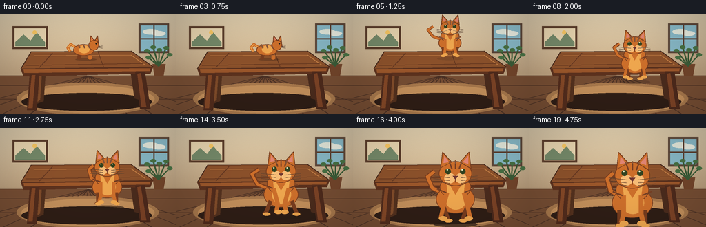
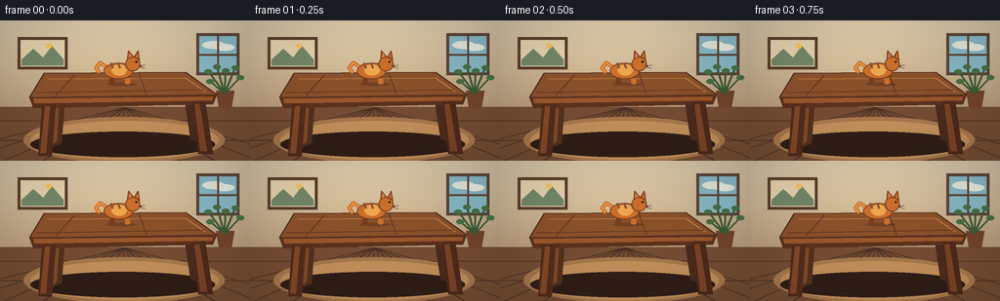

CODING AGENTS AS PIXEL WORLD MODELS
traex/GPT-5.6-Sol · dynamic_spatial_relationship_0012
点击播放 · 原生 RGB 像素
逐轮保存的候选
回放视频、检查图与代码变化。
每份候选均可单独播放。实际图片检查记录在下方工具轨迹中。
候选 01播放与检查图
点击播放 · 原生 RGB 像素

展开代码变化
--- 上一保存版本
+++ 本次保存版本
@@ -0,0 +1,209 @@
+from pathlib import Path
+import math
+import numpy as np
+from PIL import Image, ImageDraw, ImageFilter
+import artifact_io
+
+W,H,N,S = 256,144,20,4
+SS=3
+rng=np.random.default_rng(1212)
+
+def sc(v): return int(round(v*SS))
+def pts(seq): return [(sc(x),sc(y)) for x,y in seq]
+def ellipse(d,box,fill,outline=None,width=1): d.ellipse(tuple(sc(x) for x in box),fill=fill,outline=outline,width=sc(width))
+def line(d,xy,fill,width=1,joint='curve'): d.line(pts(xy),fill=fill,width=sc(width),joint=joint)
+def poly(d,xy,fill,outline=None): d.polygon(pts(xy),fill=fill); outline and d.line(pts(list(xy)+[xy[0]]),fill=outline,width=sc(1),joint='curve')
+
+def gradient_bg():
+ yy,xx=np.mgrid[0:H*SS,0:W*SS]
+ # warm cream wall with gently lit center
+ wall=np.zeros((H*SS,W*SS,3),dtype=np.float32)
+ top=np.array([205,190,163]); bot=np.array([157,124,91])
+ t=np.clip(yy/(H*SS),0,1)[...,None]
+ wall=top*(1-t)+bot*t
+ glow=np.exp(-(((xx-115*SS)/(130*SS))**2+((yy-42*SS)/(75*SS))**2))[...,None]
+ wall += glow*np.array([24,21,14])
+ noise=rng.normal(0,1.0,(H*SS,W*SS,1))
+ wall += noise
+ return Image.fromarray(np.uint8(np.clip(wall,0,255)),'RGB').convert('RGBA')
+
+def draw_room(im):
+ d=ImageDraw.Draw(im,'RGBA')
+ # wall panels and baseboard
+ line(d,[(0,89),(256,89)],(92,65,49,150),1)
+ poly(d,[(0,89),(256,89),(256,144),(0,144)],(117,77,51,255))
+ # floorboards, perspective seams
+ for x in [-90,-40,4,44,82,117,151,184,220,264,315]:
+ line(d,[(128,89),(x,144)],(73,48,36,105),1)
+ for y in [103,123]: line(d,[(0,y),(256,y)],(83,53,38,95),1)
+ # framed picture
+ poly(d,[(18,17),(69,17),(69,50),(18,50)],(91,61,43,230))
+ poly(d,[(21,20),(66,20),(66,47),(21,47)],(229,210,173,255))
+ # stylized landscape in frame
+ poly(d,[(22,40),(34,29),(44,38),(53,26),(65,40),(65,46),(22,46)],(116,136,104,255))
+ ellipse(d,(47,23,53,29),(244,196,98,255))
+ # window, right, blue daylight
+ poly(d,[(201,13),(245,13),(245,56),(201,56)],(91,69,55,255))
+ poly(d,[(204,16),(242,16),(242,53),(204,53)],(135,183,197,255))
+ # distant branches/clouds
+ ellipse(d,(207,21,230,29),(224,229,216,100)); ellipse(d,(220,24,240,31),(231,234,222,90))
+ line(d,[(223,16),(223,53)],(93,69,55,255),2); line(d,[(204,35),(242,35)],(93,69,55,255),2)
+ # plant in back corner
+ poly(d,[(221,72),(240,72),(237,89),(224,89)],(114,69,43,255))
+ for end in [(213,52),(222,47),(231,51),(241,48),(246,58),(215,62)]:
+ line(d,[(230,75),end],(59,91,55,255),2)
+ ellipse(d,(end[0]-4,end[1]-2,end[0]+4,end[1]+3),(71,112,67,255))
+ # soft rug under table
+ ellipse(d,(24,99,230,146),(167,120,76,120)); ellipse(d,(31,103,224,143),(194,143,91,90))
+
+def draw_table(im):
+ d=ImageDraw.Draw(im,'RGBA')
+ # contact shadow
+ ellipse(d,(31,114,220,140),(47,30,22,90))
+ # back legs behind top
+ poly(d,[(55,72),(67,72),(63,126),(53,130)],(83,49,30,255))
+ poly(d,[(187,69),(198,71),(206,125),(195,122)],(75,44,29,255))
+ # leg highlights
+ poly(d,[(57,76),(61,76),(58,124),(54,127)],(128,76,42,255))
+ # top surface
+ poly(d,[(45,54),(190,53),(222,76),(30,79)],(139,81,43,255),(71,42,29,255))
+ # wood grain
+ line(d,[(49,60),(190,59),(210,73)],(193,125,68,130),1)
+ line(d,[(37,74),(208,71)],(91,48,28,110),1)
+ line(d,[(76,56),(57,77)],(102,57,34,100),1)
+ line(d,[(142,54),(150,76)],(98,54,32,90),1)
+ # thick front apron
+ poly(d,[(30,79),(222,76),(218,86),(34,90)],(93,50,30,255))
+ poly(d,[(34,80),(218,78),(217,82),(35,85)],(155,87,43,255))
+ # front legs
+ poly(d,[(43,86),(57,86),(53,139),(39,139)],(83,45,29,255))
+ poly(d,[(196,84),(210,83),(218,137),(203,137)],(77,42,28,255))
+ poly(d,[(46,88),(51,88),(47,136),(41,136)],(132,72,39,255))
+ poly(d,[(199,86),(204,85),(212,134),(205,134)],(124,67,38,255))
+
+def cat_pose(frame):
+ # returns center x, ground/feet y, scale, orientation, gait, vertical body offset
+ if frame <= 3:
+ return 124+frame*3.2, 65, .72, 'side', frame%2, 0
+ if frame == 4:
+ return 139, 66, .73, 'crouch',0,0
+ if frame <= 9:
+ u=(frame-4)/5
+ ease=u*u*(3-2*u)
+ x=139+15*ease
+ ground=66+42*ease-16*math.sin(math.pi*u)
+ return x,ground,.74+.25*u,'front',frame%2, -1
+ u=(frame-9)/10
+ ease=u*u*(3-2*u)
+ x=154-5*ease + 1.8*math.sin(u*math.pi*2)
+ ground=108+34*ease
+ scale=.99+.43*ease
+ bob=-1.8*abs(math.sin(frame*math.pi/2))*(1-u)
+ return x,ground,scale,'front',frame%4,bob
+
+def draw_cat(im,frame):
+ x,gy,z,orient,gait,bob=cat_pose(frame)
+ layer=Image.new('RGBA',im.size,(0,0,0,0)); d=ImageDraw.Draw(layer,'RGBA')
+ X=lambda a: x+a*z; Y=lambda a: gy+a*z+bob
+ fur=(205,111,43,255); light=(239,167,79,255); dark=(120,61,31,255); stripe=(119,62,34,210)
+ # ground shadow (only when near floor; tiny tabletop shadow initially)
+ if frame<=4: ellipse(d,(X(-21),Y(-2),X(22),Y(3)),(54,31,19,75))
+ else:
+ shadow_alpha=int(35+95*min(1,max(0,(gy-84)/44)))
+ ellipse(d,(X(-24),gy+z*1,X(24),gy+z*7),(42,28,21,shadow_alpha))
+ if orient in ('side','crouch'):
+ crouch=3 if orient=='crouch' else 0
+ # tail curling proudly to left
+ tail=[(X(-18),Y(-22+crouch)),(X(-30),Y(-30+crouch)),(X(-36),Y(-23+crouch)),(X(-31),Y(-16+crouch))]
+ line(d,tail,fur,max(4,int(6*z)))
+ line(d,tail,light,max(1,int(2*z)))
+ # legs, far first
+ legshift=[-12,10]
+ for j,lx in enumerate(legshift):
+ yy=-8+crouch
+ poly(d,[(X(lx-4),Y(yy)),(X(lx+2),Y(yy)),(X(lx+3),Y(-1)),(X(lx-1),Y(1)),(X(lx-5),Y(-1))],dark if j==0 else fur)
+ # body and chest
+ ellipse(d,(X(-25),Y(-30+crouch),X(17),Y(-7+crouch)),fur,dark,1)
+ ellipse(d,(X(-14),Y(-28+crouch),X(8),Y(-12+crouch)),light)
+ # neck/head right
+ ellipse(d,(X(6),Y(-39+crouch),X(27),Y(-18+crouch)),fur,dark,1)
+ # ears
+ poly(d,[(X(9),Y(-35+crouch)),(X(10),Y(-47+crouch)),(X(17),Y(-39+crouch))],fur,dark)
+ poly(d,[(X(19),Y(-39+crouch)),(X(24),Y(-47+crouch)),(X(26),Y(-34+crouch))],fur,dark)
+ poly(d,[(X(12),Y(-39+crouch)),(X(12),Y(-44+crouch)),(X(15),Y(-40+crouch))],(222,127,115,255))
+ # stripes
+ for off in [-15,-5,5]: line(d,[(X(off),Y(-30+crouch)),(X(off+3),Y(-22+crouch))],stripe,2)
+ # face profile
+ ellipse(d,(X(20),Y(-33+crouch),X(23),Y(-30+crouch)),(43,35,24,255))
+ ellipse(d,(X(26),Y(-27+crouch),X(29),Y(-24+crouch)),(91,47,38,255))
+ line(d,[(X(25),Y(-25+crouch)),(X(34),Y(-27+crouch))],(75,56,43,180),1)
+ line(d,[(X(25),Y(-24+crouch)),(X(34),Y(-22+crouch))],(75,56,43,180),1)
+ else:
+ # running/front view. body tapers up toward head
+ # tail swings visibly out to side
+ sway=math.sin(frame*1.55)
+ tail=[(X(-10),Y(-28)),(X(-27-5*sway),Y(-36)),(X(-33-8*sway),Y(-48)),(X(-25-6*sway),Y(-54))]
+ line(d,tail,dark,max(4,int(6*z))); line(d,tail,fur,max(3,int(4*z)))
+ # hind body
+ ellipse(d,(X(-21),Y(-39),X(21),Y(-8)),fur,dark,1)
+ ellipse(d,(X(-11),Y(-35),X(12),Y(-12)),light)
+ # Running legs alternate, progressively calmer final frame
+ phase=math.sin((frame-5)*math.pi/2)
+ if frame>=18: phase*=0.25
+ # rear legs
+ for side in [-1,1]:
+ lx=side*13
+ ext=phase*side*5
+ line(d,[(X(lx),Y(-16)),(X(lx+ext),Y(-2)),(X(lx+ext+side*3),Y(1))],dark,max(4,int(5*z)))
+ ellipse(d,(X(lx+ext-4),Y(-2),X(lx+ext+5),Y(2)),light)
+ # chest/neck
+ ellipse(d,(X(-17),Y(-49),X(17),Y(-24)),fur,dark,1)
+ poly(d,[(X(-10),Y(-46)),(X(0),Y(-28)),(X(11),Y(-46)),(X(8),Y(-23)),(X(-8),Y(-23))],light)
+ # front legs swinging
+ for side in [-1,1]:
+ lx=side*9; ext=-phase*side*5
+ line(d,[(X(lx),Y(-31)),(X(lx+ext),Y(-12)),(X(lx+ext+side*2),Y(-3))],fur,max(4,int(5*z)))
+ ellipse(d,(X(lx+ext-4),Y(-5),X(lx+ext+5),Y(0)),light)
+ # head and ears
+ ellipse(d,(X(-18),Y(-65),X(18),Y(-38)),fur,dark,1)
+ poly(d,[(X(-16),Y(-58)),(X(-14),Y(-75)),(X(-4),Y(-64))],fur,dark)
+ poly(d,[(X(5),Y(-64)),(X(15),Y(-75)),(X(17),Y(-57))],fur,dark)
+ poly(d,[(X(-13),Y(-63)),(X(-12),Y(-71)),(X(-7),Y(-64))],(225,133,116,255))
+ poly(d,[(X(8),Y(-64)),(X(14),Y(-71)),(X(14),Y(-62))],(225,133,116,255))
+ # forehead tabby marks
+ line(d,[(X(-7),Y(-65)),(X(-4),Y(-57))],stripe,2)
+ line(d,[(X(0),Y(-66)),(X(0),Y(-57))],stripe,2)
+ line(d,[(X(7),Y(-65)),(X(4),Y(-57))],stripe,2)
+ # muzzle
+ ellipse(d,(X(-12),Y(-52),X(0),Y(-41)),(247,189,119,255))
+ ellipse(d,(X(0),Y(-52),X(12),Y(-41)),(247,189,119,255))
+ # eyes with catchlight
+ ellipse(d,(X(-11),Y(-57),X(-5),Y(-51)),(48,66,32,255))
+ ellipse(d,(X(5),Y(-57),X(11),Y(-51)),(48,66,32,255))
+ ellipse(d,(X(-9.5),Y(-56.5),X(-8),Y(-55)),(244,244,204,255)); ellipse(d,(X(6.5),Y(-56.5),X(8),Y(-55)),(244,244,204,255))
+ poly(d,[(X(-3),Y(-49)),(X(3),Y(-49)),(X(0),Y(-45))],(111,55,49,255))
+ line(d,[(X(0),Y(-45)),(X(0),Y(-42))],dark,1)
+ # whiskers
+ for dy in [-2,1,4]:
+ line(d,[(X(-6),Y(-45+dy)),(X(-24),Y(-47+dy))],(85,62,47,180),1)
+ line(d,[(X(6),Y(-45+dy)),(X(24),Y(-47+dy))],(85,62,47,180),1)
+ # body stripes
+ line(d,[(X(-20),Y(-35)),(X(-10),Y(-31))],stripe,2); line(d,[(X(20),Y(-35)),(X(10),Y(-31))],stripe,2)
+ # tiny directional motion streaks during fastest run, behind semantic subject
+ im.alpha_composite(layer)
+
+def render(frame):
+ im=gradient_bg(); draw_room(im)
+ draw_table(im)
+ # During initial frames cat is clearly on tabletop; subsequently cat passes in front of table.
+ draw_cat(im,frame)
+ # cinematic gentle vignette
+ arr=np.array(im.convert('RGB'),dtype=np.float32)
+ yy,xx=np.mgrid[0:H*SS,0:W*SS]
+ rr=((xx-W*SS/2)/(W*SS*.74))**2+((yy-H*SS/2)/(H*SS*.82))**2
+ arr*=np.clip(1-.18*rr,0.74,1)[...,None]
+ out=Image.fromarray(np.uint8(np.clip(arr,0,255))).resize((W,H),Image.Resampling.LANCZOS)
+ return np.array(out,dtype=np.uint8)
+
+frames=np.stack([render(i) for i in range(N)])
+artifact_io.save(frames,Path(__file__).resolve().parent)
可观测工具轨迹
实际执行的命令与返回图片。
命令 1exit 0
/bin/bash -lc "cat prompt.txt && printf '\\n---RULES---\\n' && cat GENERATION_RULES.md && printf '\\n---SPEC---\\n' && cat task_spec.json"
命令 2exit 0
/bin/bash -lc "find . -maxdepth 2 -type f -printf '%p\\n' | sort && printf '\\nTools:\\n' && command -v ffmpeg || true && command -v python3 || true && python3 - <<'PY'
try:
import cv2; print('cv2',cv2.__version__)
except Exception as e: print('no cv2',e)
try:
import PIL; print('PIL',PIL.__version__)
except Exception as e: print('no PIL',e)
PY"命令 3exit 0
/bin/bash -lc 'cat artifact_io.py'
命令 4exit 0
/bin/bash -lc 'find /usr/share/fonts/truetype -type f | head -20'
命令 5exit 0
/bin/bash -lc "cat > generate.py <<'PY'
from pathlib import Path
import math
import numpy as np
from PIL import Image, ImageDraw, ImageFilter
import artifact_io
W,H,N,S = 256,144,20,4
SS=3
rng=np.random.default_rng(1212)
def sc(v): return int(round(v*SS))
def pts(seq): return [(sc(x),sc(y)) for x,y in seq]
def ellipse(d,box,fill,outline=None,width=1): d.ellipse(tuple(sc(x) for x in box),fill=fill,outline=outline,width=sc(width))
def line(d,xy,fill,width=1,joint='curve'): d.line(pts(xy),fill=fill,width=sc(width),joint=joint)
def poly(d,xy,fill,outline=None): d.polygon(pts(xy),fill=fill); outline and d.line(pts(list(xy)+[xy[0]]),fill=outline,width=sc(1),joint='curve')
def gradient_bg():
yy,xx=np.mgrid[0:H*SS,0:W*SS]
# warm cream wall with gently lit center
wall=np.zeros((H*SS,W*SS,3),dtype=np.float32)
top=np.array([205,190,163]); bot=np.array([157,124,91])
t=np.clip(yy/(H*SS),0,1)[...,None]
wall=top*(1-t)+bot*t
glow=np.exp(-(((xx-115*SS)/(130*SS))**2+((yy-42*SS)/(75*SS))**2))[...,None]
wall += glow*np.array([24,21,14])
noise=rng.normal(0,1.0,(H*SS,W*SS,1))
wall += noise
return Image.fromarray(np.uint8(np.clip(wall,0,255)),'RGB').convert('RGBA')
def draw_room(im):
d=ImageDraw.Draw(im,'RGBA')
# wall panels and baseboard
line(d,[(0,89),(256,89)],(92,65,49,150),1)
poly(d,[(0,89),(256,89),(256,144),(0,144)],(117,77,51,255))
# floorboards, perspective seams
for x in [-90,-40,4,44,82,117,151,184,220,264,315]:
line(d,[(128,89),(x,144)],(73,48,36,105),1)
for y in [103,123]: line(d,[(0,y),(256,y)],(83,53,38,95),1)
# framed picture
poly(d,[(18,17),(69,17),(69,50),(18,50)],(91,61,43,230))
poly(d,[(21,20),(66,20),(66,47),(21,47)],(229,210,173,255))
# stylized landscape in frame
poly(d,[(22,40),(34,29),(44,38),(53,26),(65,40),(65,46),(22,46)],(116,136,104,255))
ellipse(d,(47,23,53,29),(244,196,98,255))
# window, right, blue daylight
poly(d,[(201,13),(245,13),(245,56),(201,56)],(91,69,55,255))
poly(d,[(204,16),(242,16),(242,53),(204,53)],(135,183,197,255))
# distant branches/clouds
ellipse(d,(207,21,230,29),(224,229,216,100)); ellipse(d,(220,24,240,31),(231,234,222,90))
line(d,[(223,16),(223,53)],(93,69,55,255),2); line(d,[(204,35),(242,35)],(93,69,55,255),2)
# plant in back corner
poly(d,[(221,72),(240,72),(237,89),(224,89)],(114,69,43,255))
for end in [(213,52),(222,47),(231,51),(241,48),(246,58),(215,62)]:
line(d,[(230,75),end],(59,91,55,255),2)
ellipse(d,(end[0]-4,end[1]-2,end[0]+4,end[1]+3),(71,112,67,255))
# soft rug under table
ellipse(d,(24,99,230,146),(167,120,76,120)); ellipse(d,(31,103,224,143),(194,143,91,90))
def draw_table(im):
d=ImageDraw.Draw(im,'RGBA')
# contact shadow
ellipse(d,(31,114,220,140),(47,30,22,90))
# back legs behind top
poly(d,[(55,72),(67,72),(63,126),(53,130)],(83,49,30,255))
poly(d,[(187,69),(198,71),(206,125),(195,122)],(75,44,29,255))
# leg highlights
poly(d,[(57,76),(61,76),(58,124),(54,127)],(128,76,42,255))
# top surface
poly(d,[(45,54),(190,53),(222,76),(30,79)],(139,81,43,255),(71,42,29,255))
# wood grain
line(d,[(49,60),(190,59),(210,73)],(193,125,68,130),1)
line(d,[(37,74),(208,71)],(91,48,28,110),1)
line(d,[(76,56),(57,77)],(102,57,34,100),1)
line(d,[(142,54),(150,76)],(98,54,32,90),1)
# thick front apron
poly(d,[(30,79),(222,76),(218,86),(34,90)],(93,50,30,255))
poly(d,[(34,80),(218,78),(217,82),(35,85)],(155,87,43,255))
# front legs
poly(d,[(43,86),(57,86),(53,139),(39,139)],(83,45,29,255))
poly(d,[(196,84),(210,83),(218,137),(203,137)],(77,42,28,255))
poly(d,[(46,88),(51,88),(47,136),(41,136)],(132,72,39,255))
poly(d,[(199,86),(204,85),(212,134),(205,134)],(124,67,38,255))
def cat_pose(frame):
# returns center x, ground/feet y, scale, orientation, gait, vertical body offset
if frame <= 3:
return 124+frame*3.2, 65, .72, 'side', frame%2, 0
if frame == 4:
return 139, 66, .73, 'crouch',0,0
if frame <= 9:
u=(frame-4)/5
ease=u*u*(3-2*u)
x=139+15*ease
ground=66+42*ease-16*math.sin(math.pi*u)
return x,ground,.74+.25*u,'front',frame%2, -1
u=(frame-9)/10
ease=u*u*(3-2*u)
x=154-5*ease + 1.8*math.sin(u*math.pi*2)
ground=108+34*ease
scale=.99+.43*ease
bob=-1.8*abs(math.sin(frame*math.pi/2))*(1-u)
return x,ground,scale,'front',frame%4,bob
def draw_cat(im,frame):
x,gy,z,orient,gait,bob=cat_pose(frame)
layer=Image.new('RGBA',im.size,(0,0,0,0)); d=ImageDraw.Draw(layer,'RGBA')
X=lambda a: x+a*z; Y=lambda a: gy+a*z+bob
fur=(205,111,43,255); light=(239,167,79,255); dark=(120,61,31,255); stripe=(119,62,34,210)
# ground shadow (only when near floor; tiny tabletop shadow initially)
if frame<=4: ellipse(d,(X(-21),Y(-2),X(22),Y(3)),(54,31,19,75))
else:
shadow_alpha=int(35+95*min(1,max(0,(gy-84)/44)))
ellipse(d,(X(-24),gy+z*1,X(24),gy+z*7),(42,28,21,shadow_alpha))
if orient in ('side','crouch'):
crouch=3 if orient=='crouch' else 0
# tail curling proudly to left
tail=[(X(-18),Y(-22+crouch)),(X(-30),Y(-30+crouch)),(X(-36),Y(-23+crouch)),(X(-31),Y(-16+crouch))]
line(d,tail,fur,max(4,int(6*z)))
line(d,tail,light,max(1,int(2*z)))
# legs, far first
legshift=[-12,10]
for j,lx in enumerate(legshift):
yy=-8+crouch
poly(d,[(X(lx-4),Y(yy)),(X(lx+2),Y(yy)),(X(lx+3),Y(-1)),(X(lx-1),Y(1)),(X(lx-5),Y(-1))],dark if j==0 else fur)
# body and chest
ellipse(d,(X(-25),Y(-30+crouch),X(17),Y(-7+crouch)),fur,dark,1)
ellipse(d,(X(-14),Y(-28+crouch),X(8),Y(-12+crouch)),light)
# neck/head right
ellipse(d,(X(6),Y(-39+crouch),X(27),Y(-18+crouch)),fur,dark,1)
# ears
poly(d,[(X(9),Y(-35+crouch)),(X(10),Y(-47+crouch)),(X(17),Y(-39+crouch))],fur,dark)
poly(d,[(X(19),Y(-39+crouch)),(X(24),Y(-47+crouch)),(X(26),Y(-34+crouch))],fur,dark)
poly(d,[(X(12),Y(-39+crouch)),(X(12),Y(-44+crouch)),(X(15),Y(-40+crouch))],(222,127,115,255))
# stripes
for off in [-15,-5,5]: line(d,[(X(off),Y(-30+crouch)),(X(off+3),Y(-22+crouch))],stripe,2)
# face profile
ellipse(d,(X(20),Y(-33+crouch),X(23),Y(-30+crouch)),(43,35,24,255))
ellipse(d,(X(26),Y(-27+crouch),X(29),Y(-24+crouch)),(91,47,38,255))
line(d,[(X(25),Y(-25+crouch)),(X(34),Y(-27+crouch))],(75,56,43,180),1)
line(d,[(X(25),Y(-24+crouch)),(X(34),Y(-22+crouch))],(75,56,43,180),1)
else:
# running/front view. body tapers up toward head
# tail swings visibly out to side
sway=math.sin(frame*1.55)
tail=[(X(-10),Y(-28)),(X(-27-5*sway),Y(-36)),(X(-33-8*sway),Y(-48)),(X(-25-6*sway),Y(-54))]
line(d,tail,dark,max(4,int(6*z))); line(d,tail,fur,max(3,int(4*z)))
# hind body
ellipse(d,(X(-21),Y(-39),X(21),Y(-8)),fur,dark,1)
ellipse(d,(X(-11),Y(-35),X(12),Y(-12)),light)
# Running legs alternate, progressively calmer final frame
phase=math.sin((frame-5)*math.pi/2)
if frame>=18: phase*=0.25
# rear legs
for side in [-1,1]:
lx=side*13
ext=phase*side*5
line(d,[(X(lx),Y(-16)),(X(lx+ext),Y(-2)),(X(lx+ext+side*3),Y(1))],dark,max(4,int(5*z)))
ellipse(d,(X(lx+ext-4),Y(-2),X(lx+ext+5),Y(2)),light)
# chest/neck
ellipse(d,(X(-17),Y(-49),X(17),Y(-24)),fur,dark,1)
poly(d,[(X(-10),Y(-46)),(X(0),Y(-28)),(X(11),Y(-46)),(X(8),Y(-23)),(X(-8),Y(-23))],light)
# front legs swinging
for side in [-1,1]:
lx=side*9; ext=-phase*side*5
line(d,[(X(lx),Y(-31)),(X(lx+ext),Y(-12)),(X(lx+ext+side*2),Y(-3))],fur,max(4,int(5*z)))
ellipse(d,(X(lx+ext-4),Y(-5),X(lx+ext+5),Y(0)),light)
# head and ears
ellipse(d,(X(-18),Y(-65),X(18),Y(-38)),fur,dark,1)
poly(d,[(X(-16),Y(-58)),(X(-14),Y(-75)),(X(-4),Y(-64))],fur,dark)
poly(d,[(X(5),Y(-64)),(X(15),Y(-75)),(X(17),Y(-57))],fur,dark)
poly(d,[(X(-13),Y(-63)),(X(-12),Y(-71)),(X(-7),Y(-64))],(225,133,116,255))
poly(d,[(X(8),Y(-64)),(X(14),Y(-71)),(X(14),Y(-62))],(225,133,116,255))
# forehead tabby marks
line(d,[(X(-7),Y(-65)),(X(-4),Y(-57))],stripe,2)
line(d,[(X(0),Y(-66)),(X(0),Y(-57))],stripe,2)
line(d,[(X(7),Y(-65)),(X(4),Y(-57))],stripe,2)
# muzzle
ellipse(d,(X(-12),Y(-52),X(0),Y(-41)),(247,189,119,255))
ellipse(d,(X(0),Y(-52),X(12),Y(-41)),(247,189,119,255))
# eyes with catchlight
ellipse(d,(X(-11),Y(-57),X(-5),Y(-51)),(48,66,32,255))
ellipse(d,(X(5),Y(-57),X(11),Y(-51)),(48,66,32,255))
ellipse(d,(X(-9.5),Y(-56.5),X(-8),Y(-55)),(244,244,204,255)); ellipse(d,(X(6.5),Y(-56.5),X(8),Y(-55)),(244,244,204,255))
poly(d,[(X(-3),Y(-49)),(X(3),Y(-49)),(X(0),Y(-45))],(111,55,49,255))
line(d,[(X(0),Y(-45)),(X(0),Y(-42))],dark,1)
# whiskers
for dy in [-2,1,4]:
line(d,[(X(-6),Y(-45+dy)),(X(-24),Y(-47+dy))],(85,62,47,180),1)
line(d,[(X(6),Y(-45+dy)),(X(24),Y(-47+dy))],(85,62,47,180),1)
# body stripes
line(d,[(X(-20),Y(-35)),(X(-10),Y(-31))],stripe,2); line(d,[(X(20),Y(-35)),(X(10),Y(-31))],stripe,2)
# tiny directional motion streaks during fastest run, behind semantic subject
im.alpha_composite(layer)
def render(frame):
im=gradient_bg(); draw_room(im)
draw_table(im)
# During initial frames cat is clearly on tabletop; subsequently cat passes in front of table.
draw_cat(im,frame)
# cinematic gentle vignette
arr=np.array(im.convert('RGB'),dtype=np.float32)
yy,xx=np.mgrid[0:H*SS,0:W*SS]
rr=((xx-W*SS/2)/(W*SS*.74))**2+((yy-H*SS/2)/(H*SS*.82))**2
arr*=np.clip(1-.18*rr,0.74,1)[...,None]
out=Image.fromarray(np.uint8(np.clip(arr,0,255))).resize((W,H),Image.Resampling.LANCZOS)
return np.array(out,dtype=np.uint8)
frames=np.stack([render(i) for i in range(N)])
artifact_io.save(frames,Path(__file__).resolve().parent)
PY
python3 generate.py
ls -lh pixels.npz inspection.png frames/00.png frames/19.png"命令 6exit 0
/bin/bash -lc "python3 - <<'PY'
import numpy as np
z=np.load('pixels.npz')['pixels']
assert z.shape==(144,256,20) and z.dtype==np.uint32
# unpack sanity and temporal diversity
f=z.transpose(2,0,1)
print('packed',z.shape,z.dtype,'unique_frames',len({x.tobytes() for x in f}))
print('changed_pixels consecutive:',[int(np.count_nonzero(f[i]"'!=f[i-1])) for i in range(1,20)])
PY
python3 -m py_compile generate.py
'视觉工具实际返回图片 1

视觉工具实际返回图片 2

保存候选 1 份；完成命令 6 次；可验证图片返回 2 张。原始 API 响应与完整日志保留在本地。